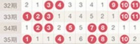
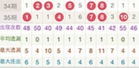

| 1. 走势图 | |
| 走势图是将最近每期的开奖号码用图表的形式直观地呈现出来，便于分析。 | |
| 如图，在第35期中，号码01在当前开出；而号码06未开出，并且已经有6期未开出了。 | |
|  | |
| 您可以按需要选择显示最近30期、50期或100期的走势图进行分析。 | |
| 2. 统计 | |
| 在走势图底部，默认显示每个号码的统计数据供您参考，包括 出现次数、平均遗漏、最大遗漏、最大连出 4项数据，如图： | |
|  | |
| 出现次数：统计期数内累计出现的次数 | |
| 平均遗漏：统计期数内遗漏的平均值。计算公式：平均遗漏=每次遗漏期数之和/出现次数。 | |
| 最大遗漏：统计期数内遗漏的最大值 | |
| 最大连出：统计期数内连续开出的最大值 | |
| 如当前显示的是100期的走势，则统计期数就是100。如您不需要参考这些数据，可以选择隐藏统计。 | |